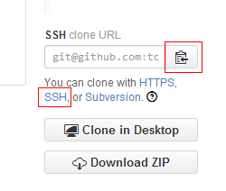
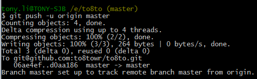

添加远程仓库
我们在github上建一个名为to8to的仓库，如图：
Github上的仓库创建成功了，但这只是个空的仓库，我们可以从这个仓库克隆出新的仓库，也可以把一个已有的本地仓库与之关联，然后，把本地仓库的内容推送到GitHub仓库。
现在，我们运行命令，让本地仓库与远程仓库相关联
$ git remote add origin git@github.com:to8towr/to8to.git
添加后，远程库的名字就是origin，也可以改成别的，但是origin这个名字一看就知道是远程库。
红色字体为你自己的用户名，每个人不同，输入命令的时候替换一下，不然就关联到我的仓库了。关联没有问题，但是你的SSH key 公钥不在我的账户内，你就没有权限推送内容上去。
这个链接是可以在你的github网站上复制的
然后我们再把github上的仓库克隆到本地
$ git clone git@github.com:to8towr/to8to.git
这时候，我们本地就多了一个to8to的文件夹，进入到这个文件夹下
$ cd to8to
我们添加一个test.txt文件并且提交，然后推送到github
$ git push -u origin master
推送成功，我们可以看看github上的这个仓库是不是多了一个test.txt的文件。
把本地库的内容推送到远程，用git push命令，实际上是把当前分支master推送到远程。
由于远程库是空的，我们第一次推送master分支时，加上了-u参数，Git不但会把本地的master分支内容推送的远程新的master分支，还会把本地的master分支和远程的master分支关联起来，在以后的推送或者拉取时就可以简化命令。
从现在起，只要本地做了提交，就可以通过命令：
$ git push origin master 推送到远程
SSH警告
当你第一次使用Git的clone或者push命令连接GitHub时，会得到一个警告：
The authenticity of host 'github.com (xx.xx.xx.xx)' can't be established.
SA key fingerprint is xx.xx.xx.xx.xx.
are you sure you want to continue connecting (yes/no)?
这是因为Git使用SSH连接，而SSH连接在第一次验证GitHub服务器的Key时，需要你确认GitHub的Key的指纹信息是否真的来自GitHub的服务器，输入yes回车即可。
Git会输出一个警告，告诉你已经把GitHub的Key添加到本机的一个信任列表里了：
Warning: Permanently added 'github.com' (RSA) to the list of known hosts.
这个警告只会出现一次，后面的操作就不会有任何警告了。
小结：
要关联一个远程库，使用命令git remote add origin git@server-name:path/repo-name.git；
关联后，使用命令git push -u origin master第一次推送master分支的所有内容；
此后，每次本地提交后，只要有必要，就可以使用命令git push origin master推送最新修改；
分布式版本系统的最大好处之一是在本地工作完全不需要考虑远程库的存在，也就是有没有联网都可以正常工作，而SVN在没有联网的时候是拒绝干活的！当有网络的时候，再把本地提交推送一下就完成了同步，真是太方便了！